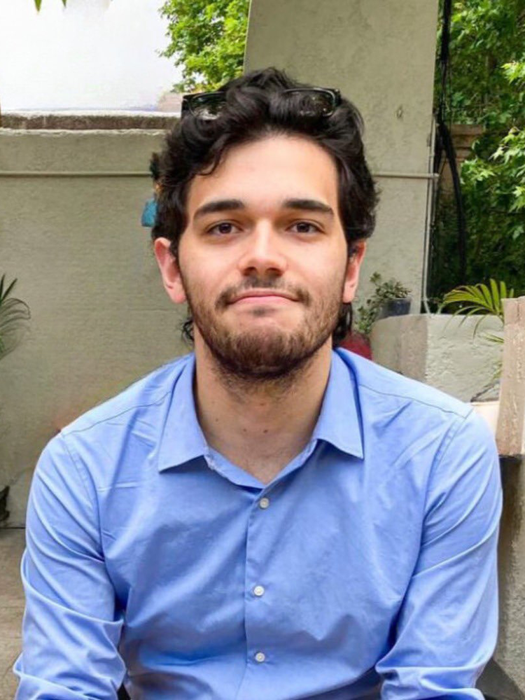
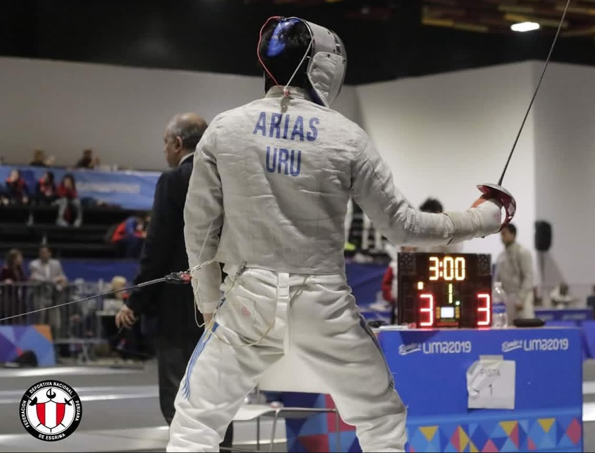
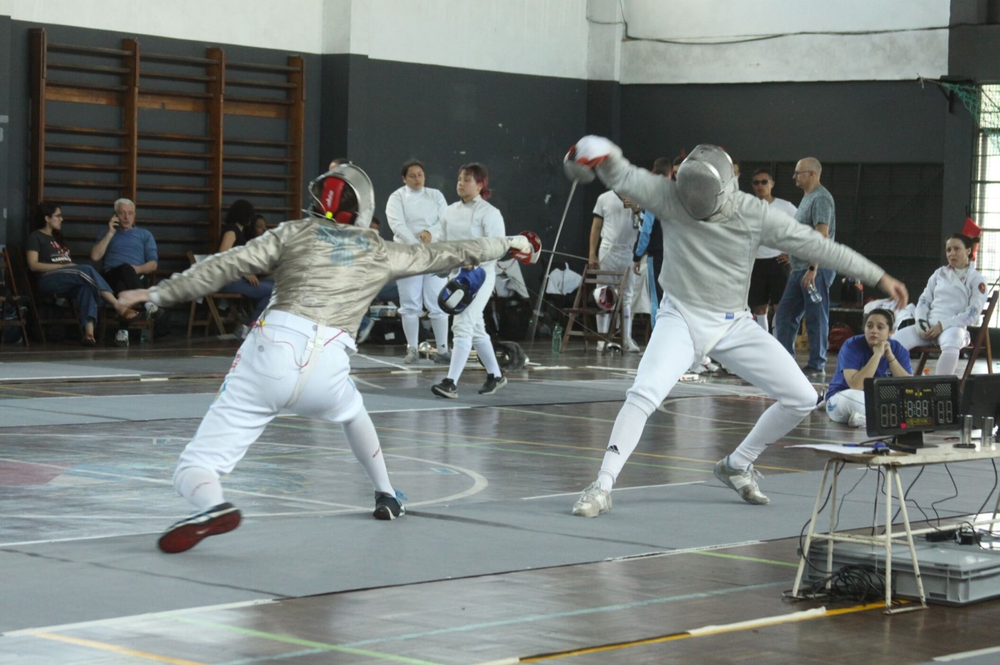

Welcome! I am currently a pre-doctoral fellow at Princeton Univeristy's
Research Program in Development Economics.
I hold a B.A. and M.A. in Economics from the Universidad de la República (UdelaR), Uruguay.
I also have a background in Political Science from the same institution. Previously, I was a research assistant for the
United Programs for Political Economy Research
and the
Economics Department
at the UdelaR. My research interests are Political Economy and Development Economics.
You can find my cv here.
Department of Economics, Princeton University
120 Julis Romo Rabinowitz, Princeton, NJ
Email Me at: ja7375@princeton.edu
Intergenerational spillovers of Collective Wage Bargaining: a case study for Uruguay.
May 2025
Master's Thesis - Directed by
Martín Leites
and
Joan Vila
The Effect of Teacher Abuse on Educational Outcomes: Evidence from Peru.
Joint with Maria Micaela Sviatschi
and Natalia Guerrero.
In progress.
The Economy of Uruguay - Facultad de Ciencias Económicas y de Administración - Universidad de la República. Fall 2023.
Outside of academia, I was a competitive fencer from 2016 until 2022. I represented Uruguay internationally at junior and senior levels. I've won (but also lost) tournaments at the national level. Nowadays I enjoy fencing only recreationally.

